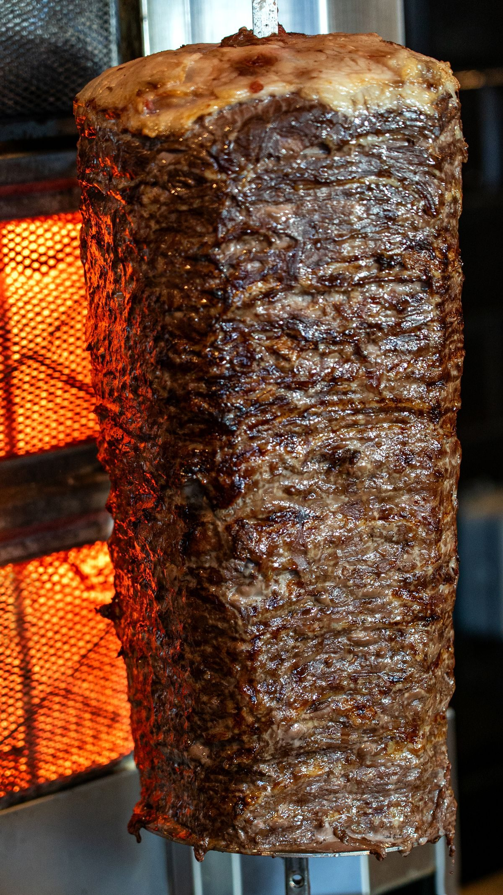

Austhentico
A Spanish food truck in Austin from Chef Luis, a Barcelona native.

About
Austhentico is a Spanish food truck in Austin from Chef Luis, a Barcelona native. The truck serves paella, patatas bravas, croquetas de jamon serrano, a jamon serrano sandwich, and tortilla espanola, with vegetarian, vegan, and gluten free options. Seating is outdoors, takeout is available, and beer is served.
Services
Paella
A Spanish rice dish from Chef Luis, a Barcelona native.
Small plates
Patatas bravas, croquetas de jamon serrano, and tortilla espanola, the Spanish potato omelet.
Jamon serrano sandwich
A sandwich built on jamon serrano, served from the truck.
Vegetarian, vegan, and gluten free options
Vegetarian, vegan, and gluten free options across the menu, with outdoor seating and takeout.
Gallery


All gallery photos are stock photos, labeled as such. They show the kind of work and setting described on this page, not this business.
Visit
Contact
Austhentico serves Austin, TX. Questions? Call +1 512-774-0109.